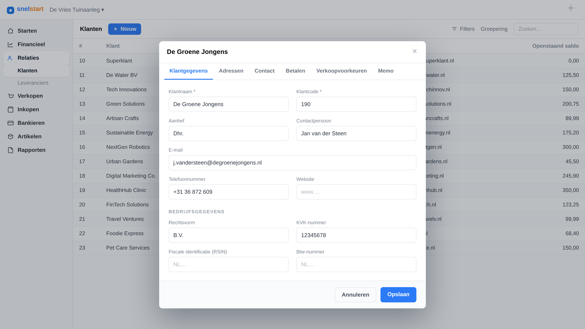
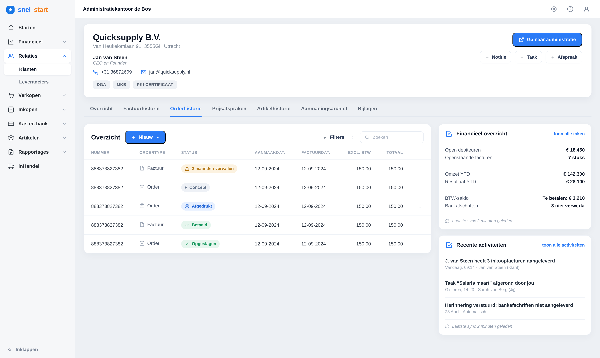
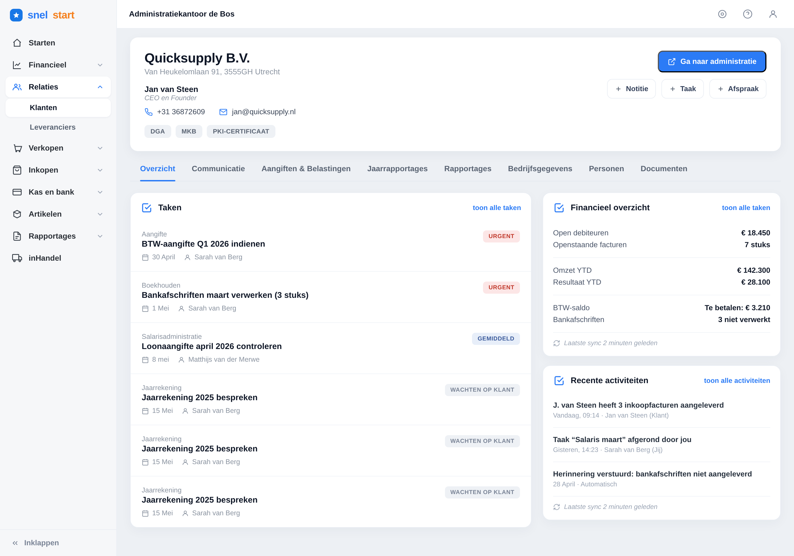

In snelstart, a "relation" was literally just a form to type in a customer’s data — name, address, bank details, and nothing more. I turned it into a full 360° overview: insights, recommendations and cross-domain data in one place, so the entrepreneur sees everything that matters about a customer — and what to do next.
Almost everything an entrepreneur does in snelstart connects to a relation — a customer or supplier. Yet the relation itself was nothing more than a form: a modal to type in a name, address and bank details. Everything that tells you how a customer actually behaves — open invoices, quotes, activity, whether they pay on time — lived scattered across other parts of the product.
To understand a single relation, users had to hop between screens and hold the picture in their head. Making the relation a real home — with insight and context — meant fewer detours and better decisions, right where the work happens.
snelstart started as a boekhoudpakket, but it's growing into a totaaloplossing — adding new ventures and products across different markets. The relation is the entity everything connects to, so it has to carry far more than contact details — right down to the smallest business.

I ran a survey with 48 SnelStart users across SnelStart 12, Web and Polaris to see how the relation screen is used today and where it falls short — then compared the findings across three roles.
Across every role, the same four needs came back — the base layer that delivers value for everyone, so it earned first priority.
Search felt limited and unreliable — users wanted filters, sorting and search on identifiers.
Even editing basic details meant hopping between separate tabs.
Activity, history and documents were missing from the relation itself.
A clear need for notes, labels and custom fields per relation.
Practical: overview, then act
A control & progress instrument
Everything together, no extra steps
I audited every place a relation shows up across snelstart, learned which jobs users came to it for, and shaped an overview around the answers people actually needed.
The same relation is opened by very different people. An entrepreneur wants to act — chase an invoice, start a quote, keep sales moving. An accountant wants control — deadlines, tax returns and the financial health of the client. So the overview adapts to who’s looking, on one shared foundation.

The entrepreneur lands on what moves the business forward: orders, invoices and what needs chasing — with the next step one click away.

The accountant opens the same relation and sees deadlines, tax returns and the client’s financial health — everything needed to stay in control across a whole portfolio.
A pop-up couldn’t hold a relationship. Promoting the relation to its own page gave the content room to breathe — and space for insight, history and context alongside the editable data.
The page leads with a read on the relation — key figures, status and financial health — so the important story lands before the raw data.
Invoices, quotes, activity, aangiften and reports come to the relation as tabs — users get the full picture without ever leaving the page.
The overview is a framework, not a one-off screen. The same foundation flexes from an action-driven ondernemer view to a fiscal accountant view — and can absorb new needs like KYC, fiscal entities and future ventures without a redesign.
Users now open and act on the relation far more than they did with the old modal.
More customers move up to higher tiers for the extra insight and advice.
Satisfaction with the relation experience rose notably once the overview shipped.
Less time from first click to the full context of a customer.
Late-paying customers are now flagged up front — turning data into the advice SnelStart’s mission is built on.